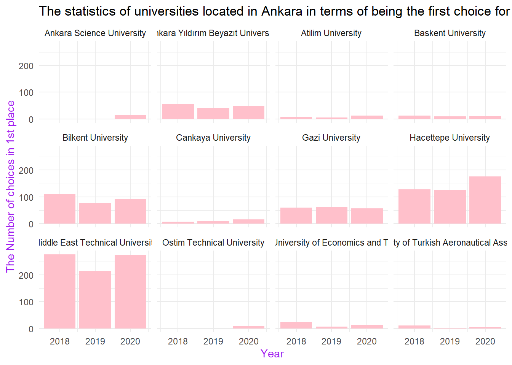
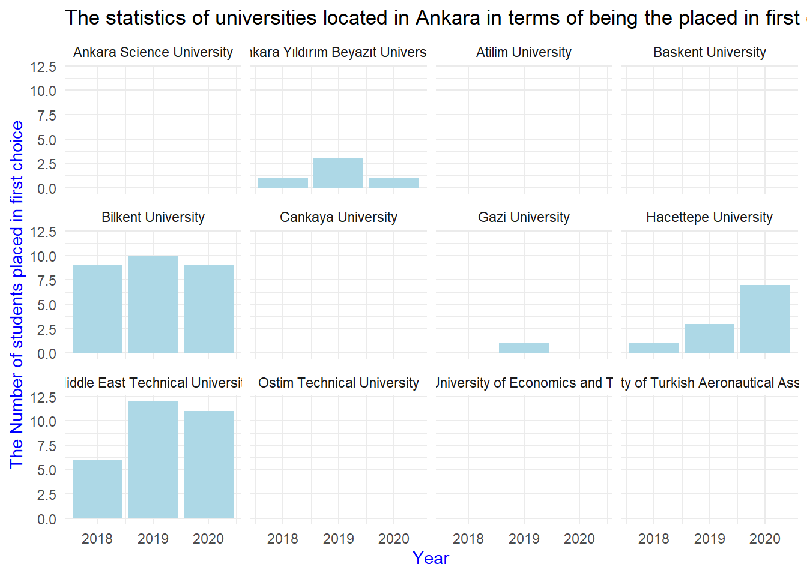
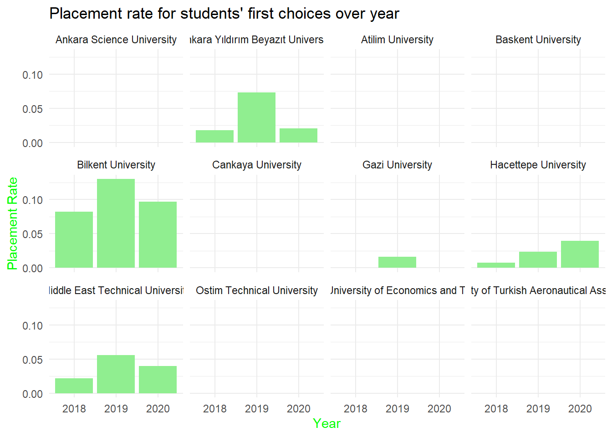
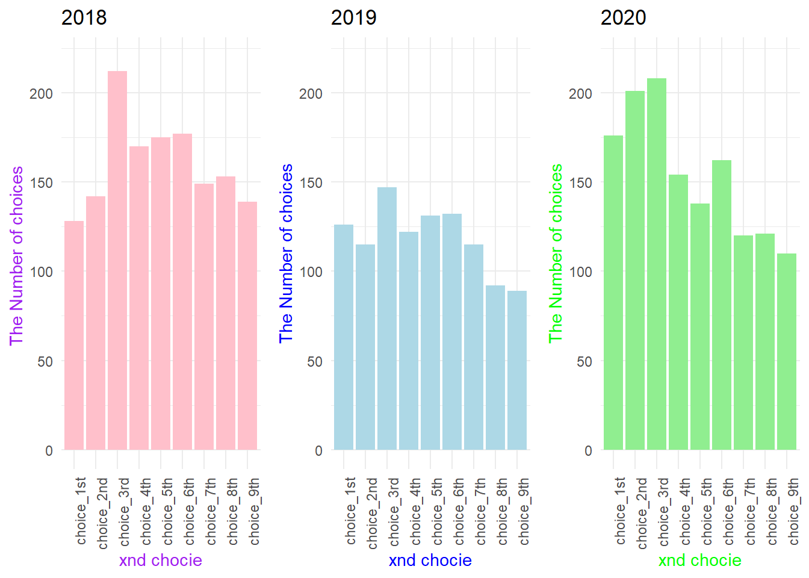

── Attaching core tidyverse packages ──────────────────────── tidyverse 2.0.0 ──
✔ forcats 1.0.0 ✔ stringr 1.5.1
✔ lubridate 1.9.3 ✔ tibble 3.2.1
✔ purrr 1.0.2 ✔ tidyr 1.3.0
✔ readr 2.1.4
── Conflicts ────────────────────────────────────────── tidyverse_conflicts() ──
✖ dplyr::filter() masks stats::filter()
✖ dplyr::lag() masks stats::lag()
ℹ Use the conflicted package (<http://conflicted.r-lib.org/>) to force all conflicts to become errors
Attaching package: 'gridExtra'
The following object is masked from 'package:dplyr':
combineAnalysis
About this site
Show the code
# The statistics of universities located in Ankara in terms of being the first choice for students
plot_1 <- ggplot(our_data, aes(x = Year, y = choice_1st)) +
geom_col(fill="pink")+
labs(x = "Year",y = "The Number of choices in 1st place")+
ggtitle("The statistics of universities located in Ankara in terms of being the first choice for students") +
theme_minimal() +
theme(axis.title = element_text(color = "purple"))+
facet_wrap(.~ University)
print(plot_1)
Among the universities in Ankara, we thought that ODTÜ, Hacettepe, and Bilkent University were most frequently chosen as the first preference, and we have confirmed this by processing our data.
We can say that the first-choice selection for private universities such as Ankara Bilim, Atılım, Çankaya, and Ostim Technical University has increased over the years.We believe that this situation is created by incentives provided by universities, such as internships, to their students.
Additionally, among the State Universities, we observe that only Hacettepe has an increasing trend in being the first choice.
Show the code
avg_first_choices <- our_data %>% group_by(University) %>%
summarise(avg_1st_choices = mean(choice_1st)) %>%
arrange(desc(avg_1st_choices))
print(avg_first_choices)# A tibble: 12 × 2
University avg_1st_choices
<chr> <dbl>
1 Middle East Technical University 256.
2 Hacettepe University 143.
3 Bilkent University 93.3
4 Gazi University 59.3
5 Ankara Yıldırım Beyazıt University 48
6 Ankara Science University 14
7 Tobb Etu University of Economics and Technology 14
8 Cankaya University 11.3
9 Baskent University 11
10 Atilim University 8.33
11 Ostim Technical University 8
12 University of Turkish Aeronautical Association 6.33Here, when the averages of the choices for ODTÜ, Hacettepe, and Bilkent are taken, we can comment that these universities are the most preferred ones. Considering the rankings, we believe this table is consistent.
#| code-fold: true
#| code-summary: "Show the code"
# The statistics of universities located in Ankara in terms of being the placed in 1st choice for students
plot_2 <- ggplot(our_data, aes(x = Year, y = placed_1st)) +
geom_col(fill="lightblue") +
labs(x = "Year",y = "The Number of students placed in first choice")+
ggtitle("The statistics of universities located in Ankara in terms of being the placed in first choice for students") +
theme_minimal() +
theme(axis.title = element_text(color = "blue"))+
facet_wrap(.~ University)
print(plot_2)
This graph shows those who put the relevant university as their first choice and got placed. Here, we observe that none of the private universities showing an increase in the first graph demonstrated value. This tells us that, despite being selected as the first choice, students could not get placed in these universities.
In 2019, the placement situation for those who put these universities as their first choice in Bilkent and ODTÜ was higher than Hacettepe, while in 2020, we observe a decrease in these numbers. This explains the increase in the number of students placed in Hacettepe in 2020. We think that the students here shifted to Hacettepe.
Show the code
# Placement rate for students' first choices
placment_rate_data <- our_data %>% mutate(placement_rate = placed_1st/choice_1st) %>% select(Year, University, placement_rate)
plot_3 <- ggplot(na.omit(placment_rate_data), aes(x = as.factor(Year), y = placement_rate)) +
geom_col(fill="lightgreen") +
labs(x = "Year",y = "Placement Rate")+
ggtitle("Placement rate for students' first choices over year") +
theme_minimal() +
theme(axis.title = element_text(color = "green"))+
facet_wrap(.~ University)
print(plot_3)
This graph observes the “writing as the first choice/placement” ratio. Higher-scored universities followed a more consistent path in the preference stage.
#| code-fold: true
#| code-summary: "Show the code"
# Hacettepe University Industrial Engineering data in 2018
hacettepe_data1 <- our_data %>% filter(University == "Hacettepe University",Year == 2018)
df_long1 <- pivot_longer(hacettepe_data1, cols = starts_with("choice"),
names_to = "Choice", values_to = "Value")
plot_4 <- ggplot(df_long1, aes(x= Choice, y = Value))+
geom_col(fill="pink")+
labs(x = "xnd chocie",y = "The Number of choices ")+
ggtitle("2018") +
theme_minimal() +
theme(axis.title = element_text(color = "purple"))+
theme(axis.text.x = element_text(angle = 90, hjust = 1))+
ylim(c(0, 220))
# Hacettepe University Industrial Engineering data in 2019
hacettepe_data2 <- our_data %>% filter(University == "Hacettepe University",Year == 2019)
df_long2 <- pivot_longer(hacettepe_data2, cols = starts_with("choice"),
names_to = "Choice", values_to = "Value")
plot_5 <- ggplot(df_long2, aes(x= Choice, y = Value))+
geom_col(fill="lightblue")+
labs(x = "xnd chocie",y = "The Number of choices")+
ggtitle("2019") +
theme_minimal() +
theme(axis.title = element_text(color = "blue"))+
theme(axis.text.x = element_text(angle = 90, hjust = 1))+
ylim(c(0, 220))
# Hacettepe University Industrial Engineering data in 2020
hacettepe_data3 <- our_data %>% filter(University == "Hacettepe University",Year == 2020)
df_long3 <- pivot_longer(hacettepe_data3, cols = starts_with("choice"),
names_to = "Choice", values_to = "Value")
plot_6 <- ggplot(df_long3, aes(x= Choice, y = Value)) +
geom_col(fill="lightgreen")+
labs(x = "xnd chocie",y = "The Number of choices")+
ggtitle("2020") +
theme_minimal() +
theme(axis.title = element_text(color = "green"))+
theme(axis.text.x = element_text(angle = 90, hjust = 1))+
ylim(c(0, 220))
print(grid.arrange (plot_4, plot_5, plot_6, ncol = 3))
TableGrob (1 x 3) "arrange": 3 grobs
z cells name grob
1 1 (1-1,1-1) arrange gtable[layout]
2 2 (1-1,2-2) arrange gtable[layout]
3 3 (1-1,3-3) arrange gtable[layout]This graph shows in which ranking Hacettepe was chosen within 3 years. We can say that this graph supports our other graphs. We see that the highest value is in the 3rd preference column. Similarly, we observe that the first-choice selection situation increases over the years.
Back to top